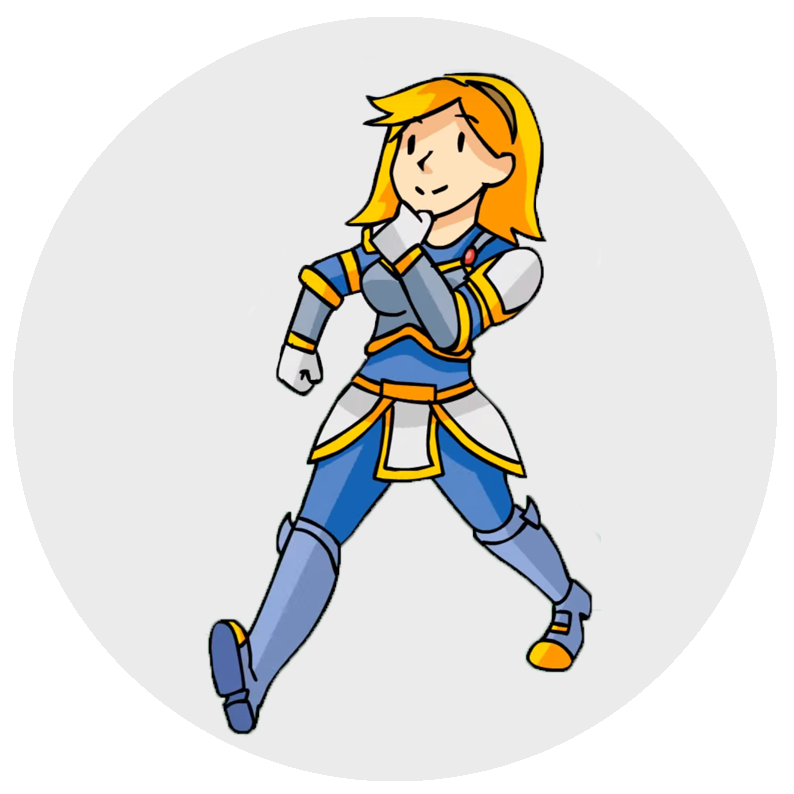

<div class="navbar">
  <div class="navbar-inner">
    <div class="left sliding"><a href="#" class="back link"> <i class="icon
icon-back"></i>
<span>Back</span>
</a>

</div>

</div>
<div class="pages">
<div data-page="partlist" class="page">
<div class="page-content">
<div class="content-block-title">About Lux</div>
<div class="page-content">
<div class="content-block">
<p> </p>
<h2><center>Lux</center></h2>
<p><center>This app is dedicated to the proper maintenance and use of bicycles; A constantly updated system in which users can view any bicycle component and make note of servicing checks. </br></br>Copyright © 2016 EB Collinson. All rights reserved.</center></p>
</div>
</div>


    </div>
  </div>
</div>
